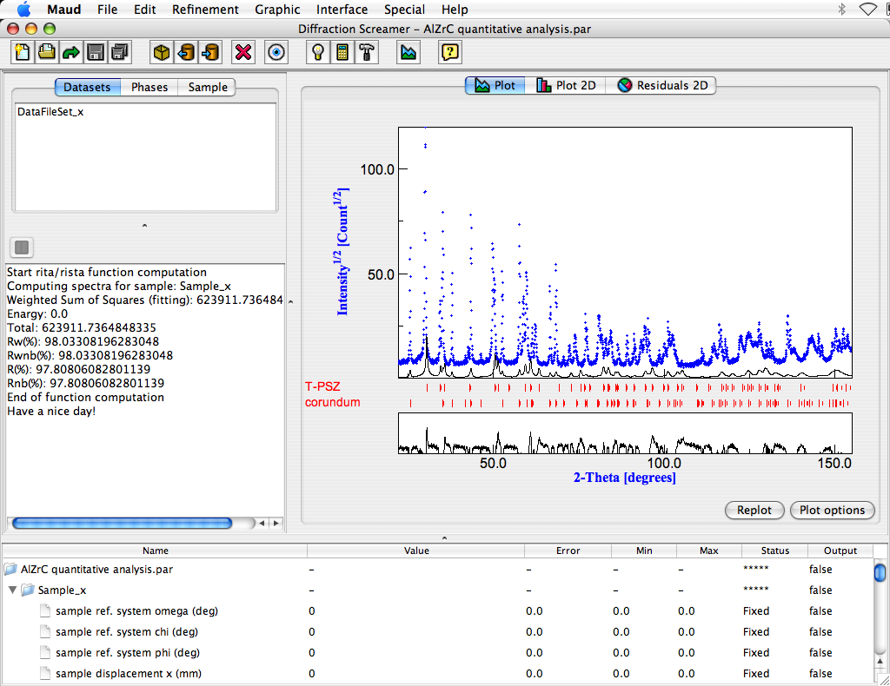
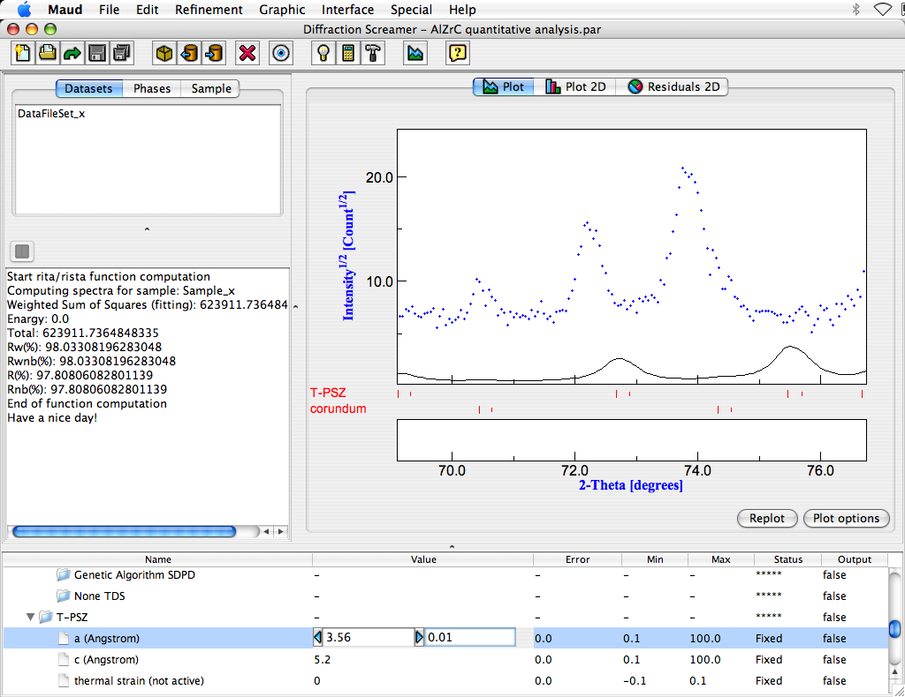
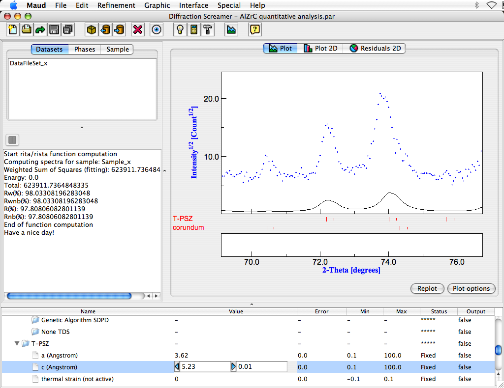

Building the analysis file (step 3: set up some "visible" parameters; specifically, the T-PSZ cell parameters)
- We are now ready to check the starting parameters for the quantitative analysis.
The main idea is to guide a little the starting analysis to ensure the least squares algorithm may
find a solution.
In general we should check that the phases we loaded are the correct one for the analysis and in particular
that the peaks of the phases roughly correspond to peaks in the spectrum.
- First we compute the spectrum based on the actual parameters.
To do this press the calculator toolbar button (the tooltip that it is shown when you leave the mouse
few seconds over it says Compute spectra or from the 'Refinement' menu, click on the Compute spectra
menu item.
The program will compute a spectrum with the actual values of the parameters, phases etc. and the spectrum plot
panel will be automatically refreshed. You should have at the end something like:

The intensity is quite low and the computed spectrum in the high 2theta part does not correspond correctly to the
experimental part (see between 140 and 150 degrees).
- Zoom in the plot panel in the 70-77 2theta degrees region by clicking and dragging a rectangle around the
plot part you want to zoom in. You should see the two peaks of the tetragonal as in the next figure. The
first peak (do not consider the small first one) correspond to the 004 reflection of the tetragonal PSZ, the
second one to the 220. The calculated peaks are instead shifted towards high angle. This because the cell
parameters depend strongly on the Ce content and the phase in the database has a different Ce content
respect to the one in the experimental pattern. We will change the cell parameters to provide a better
starting point (the calculated peaks actually are too far from the experimental ones; the least square
will diverge).
- Go to the lower panel containing a list (tree) of objects and parameters. Look for the cell parameters
of the PSZ and click on the parameter value of cell parameter a. Like in the following figure.

Near the value (inside the two arrow buttons) there is a step value. Change the value to 0.01 like in the picture.
Clicking on the left or right arrow buttons you can decrease or increase the value of the parameter by the
step value. The change in the value will be followed by a quick computation and update of the plot
to reflect the change. Try to increase the value of cell parameter a until the caluclated second peak will be
under the experimental one. Do the same for the cell parameter c that will only change the position of the first
peak. The final result will be like in the following figure.

Double click on the plot window to reset the zoom and see the result on the entire spectrum. Now you can see
there is a better correspondance between computed and experimental peaks. The phases are the correct ones.
The intensity is quite low, so we try to increase it to have a better view. Go again in the lower parameter panel
and look for the Intensity (scale factor) parameter under the Intrument inside the dataset.
Select the value, change the step value to 10 and press the right button few times until you get an intensity
comparable with the experimental one.